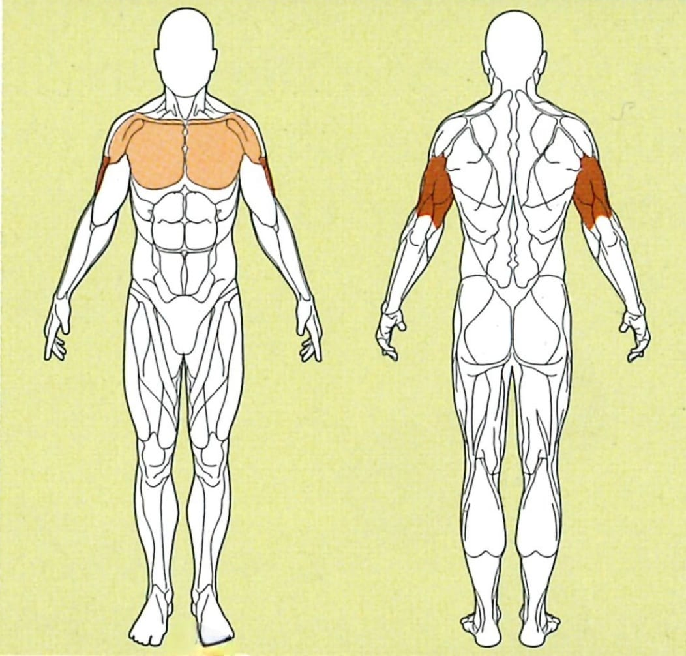

Dips

Ausgangsposition
● Klappe die Griffe in der Mitte des Kabelturms aus
● Stütze dich mit deinen Armen auf den Griffen ab
● Wichtig: Drücke beim Abstützen deine Schultern nach unten
● Verschränk die Füße um den Körper zu stabilisieren
Ausführung
Lasse deinen Körper langsam nach unten, bis deine Ellenbogen einen 90 Grad Winkel erreicht haben.
Rückführung
Drücke dich anschließend wieder nach oben, und drücke in der Ausgangsposition deine Schultern wieder nach unten. Achte darauf, dass deine Schultern konstant nach unten gedrückt sind. Dies kannst du überprüfen, indem du eine Anspannung in der Brust merkst.